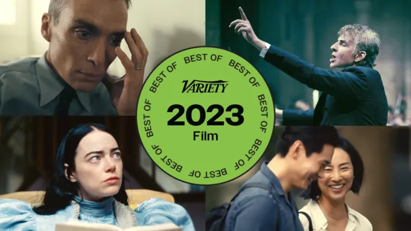

1. Poor Things
And God created woman. Playing God in this equation, Willem Dafoe suggests a cross between Dr. Frankenstein and the mad scientist’s monster, whose crudely stitched facial scars belie a childhood of cruel experimentation. Decades later, the benign Godwin Baxter continues his father’s research, reanimating a fully grown woman with the brain of an infant, whom he christens Bella (a fearless and very funny Emma Stone). This tragicomic premise sets up a boldly expressionistic provocation from absurdist social critic Yorgos Lanthimos (“The Favourite”), who assembles a demented, Buñuelian satire of gender roles that’s part “Pygmalion,” part “Lolita,” and otherwise totally distinct from anything else on the scene. While “Barbie” poked fun at the patriarchy, born-again Bella upends it.
2. Oppenheimer

I admit to being underwhelmed by “Oppenheimer” on first viewing. (Hard to imagine, considering the scale, but it didn’t help that the Imax print broke at the film’s press screening, forcing the theater to switch over to a lower-res backup projector — a twist that must have horrified control freak Christopher Nolan.) Grand as anything David Lean ever directed, this massive, awe-powered biopic had been marketed as the making of the atomic bomb, the detonation of which occurs at the two-hour mark, with a third of the movie still to go. Turns out, that last hour holds the (moral) key to why Nolan had to tell this story. After racing to beat the Germans, Manhattan Project super-brain J. Robert Oppenheimer (a never-better Cillian Murphy) faces the terrifying ramifications of what he’s wrought: We now live in a world of nuclear weapons, whose secrets inevitably fell into dangerous hands. I should have known that “Oppenheimer” would demand multiple viewings, as that was true of “Memento,” “Inception” and nearly all Nolan’s films. My advice to you: See it as big as possible as many times as it takes.
3. Chicken for Linda!

The best film at this year’s Cannes (a stellar edition that launched no fewer than four of the entries on this list) debuted quietly in the festival’s indie-centric sidebar, ACID, without pomp or the obligatory standing ovation that official selection screenings get. Three weeks later, it took the top prize at Annecy, the world’s leading animation festival. It’s uncanny, but the Crayola-colorful hand-drawn feature from directing duo Chiara Malta and Sébastien Laudenbach (“The Girl Without Hands”) captures the complicated relationship between a single mother and her 8-year-old child better than any live-action movie. The setup is simple: Linda can’t remember her late father, so she asks Mom to cook his signature chicken dish, but the main ingredient proves unusually difficult to come by. From its opening lullaby through to the loony watermelon-fight finale, this observant toon entertains the kids, while giving exasperated parents permission to be imperfect.
4. Past Lives
Ten years into A24’s existence, audiences have learned what to expect from the indie studio’s slate, as the company’s films tend to fall into two categories. There are flashy, style-forward movies, like “Spring Breakers” and “Uncut Gems,” and there are subtler, piercingly personal entries (often from voices denied the opportunity to tell their stories a decade earlier) like “Moonlight” and “Minari.” Celine Song’s poetic debut falls into the latter category, offering a poignant counterpoint to A24’s busy, Oscar-winning “Everything Everywhere All at Once,” while suggesting a low-key alternative to that movie’s multiverse premise: What if, instead of there being infinite parallel realities, old souls found one another again and again over the centuries? Here, Nora (Greta Lee), a New York-based playwright born in Korea, reconnects with her childhood sweetheart (Teo Yoo), confronting what her life might have been.
5. The Monk and the Gun

If you weren’t lucky enough to catch Bhutan’s official Oscar submission on the festival circuit this fall, keep an eye open for this unpredictable and enlightening comedy in early 2024. Previously nominated for “Lunana: A Yak in the Classroom,” director Pawo Choyning Dorji rewinds the clock a few years, as Bhutan was preparing for its first democratic election — a concept none of the locals seem to grasp, or want, even as they sip Coca-Cola and watch Bond movies on TV. Dorji, who studied in the States, invites Western viewers to observe his idyllic kingdom, contrasting modern materialism with traditional Buddhist values via the film’s lone American character, a rare-gun collector who travels halfway around the world to retrieve a rare Civil War rifle. There’s just one problem: The weapon currently belongs to a pacifist monk.
6. Anatomy of a Fall

For the U.S. release of director Justine Triet’s Cannes-winning drama, Neon added an exasperating “didshedoit.com” slate to the beginning, focusing audiences’ attention on the wrong aspect of this unconventional courtroom drama. It’s only natural to wonder: A frustrated writer plunges to his death from the upper floor of his mountain chalet, making his wife (Sandra Hüller) the only suspect. As with “The Staircase,” however, what gripped me about the ensuing investigation was how this tragedy forces the most intimate aspects of the couple’s marriage into the light, effectively putting their relationship on trial. What matters more than the verdict (or the “you be the judge” court of public opinion) is whatever their young son decides, since the trial affords the grieving boy a chance to make sense of what happened.
7. Origin

Not since “Roots” has an American drama taken such an ambitious, all-encompassing approach to the stain of slavery. “Origin” is not about ancestry, but the seeds of a system that dehumanizes one group so that others may dominate them — a dynamic for which Pulitzer-winning author Isabel Wilkerson found analogs in Nazi Germany and the Indian caste system. If “Origin” sounds like a lecture (of the sort the Florida school system seems determined to avoid), think again. Rather than making another documentary, à la remarkable “13th,” director Ava DuVernay personalizes Wilkerson’s research, dramatizing how a woman wounded by national tragedy (the murder of Trayvon Martin) and personal setbacks (casual racism, the loss of loved ones) connected disparate ideas to reframe the country’s most difficult conversation.
8. May December

At a moment when audiences can’t seem to get enough of true-crime movies on Netflix (where this meta-melodrama is now streaming), Todd Haynes takes a sly look at the imperfect prism through which such stories are presented to the public. Natalie Portman plays a professional actor who swoops into the life of an ex-con (Julianne Moore, channeling tabloid subject Mary Kay Letourneau) years after she went to prison for initiating a sexual relationship with her underage baby daddy (Charles Melton). Determined to absorb all she can from the “real” woman, Portman’s vampire-like star winds up crossing the lines in highly inappropriate ways. Zoom out, and it’s all performance — since Moore’s acting, too — in a mirror room where empathy and exploitation tend to blur.
9. The Holdovers

Alexander Payne is back on form, following 2017’s disappointing “Downsizing,” with the kind of intelligent character study that’s earned him comparisons to the great 1970s filmmakers before. “The Holdovers” is set early that decade and features a weathered-celluloid filter designed to look like it was also shot back then, though much of the comedy arises from the tough-love way a boarding school Scrooge deals with his students over Christmas break — conduct that would never fly today. Less a lost relic than a shrewdly contemporary commentary on how the way we expect people to treat one another has changed, the project reunites Payne with Paul Giamatti, uncorking more of that special “Sideways” mojo.
The Taste of Things

It’s easy to be seduced by the voluptuous way director Tran Anh Hung films the preparation of a series of gourmet French meals, his camera floating about a country kitchen as sunlight and birdsong filter through the open windows. The film, like its characters, takes the time to appreciate life’s pleasures. And yet, like “Babette’s Feast” before it, “Taste” is more than mere food porn. The subtext — and true subject — of this rich dish turns out to be the emotional connection simmering between chef Dodin Bouffant (Benoît Magimel, as the fictional late-19th-century “Napoleon of culinary arts”) and his cook (Juliette Binoche), who’ve shared a decades-long professional passion. The two actors have history, too, adding unspoken depth to this moving workplace romance, whose tender last scene says it all.